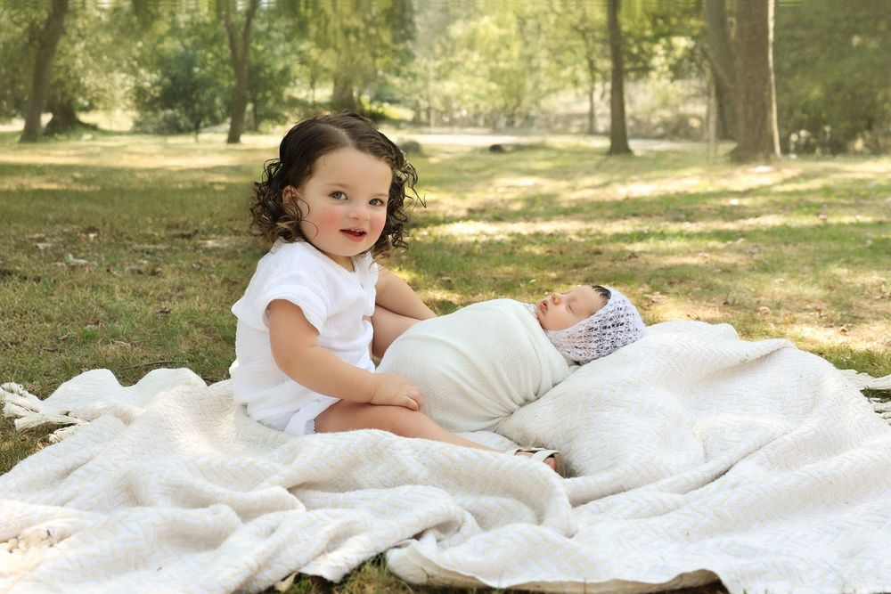
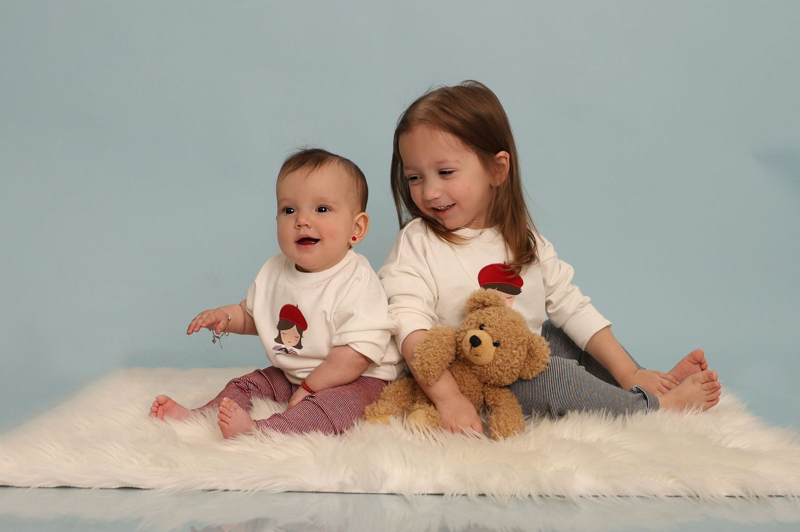
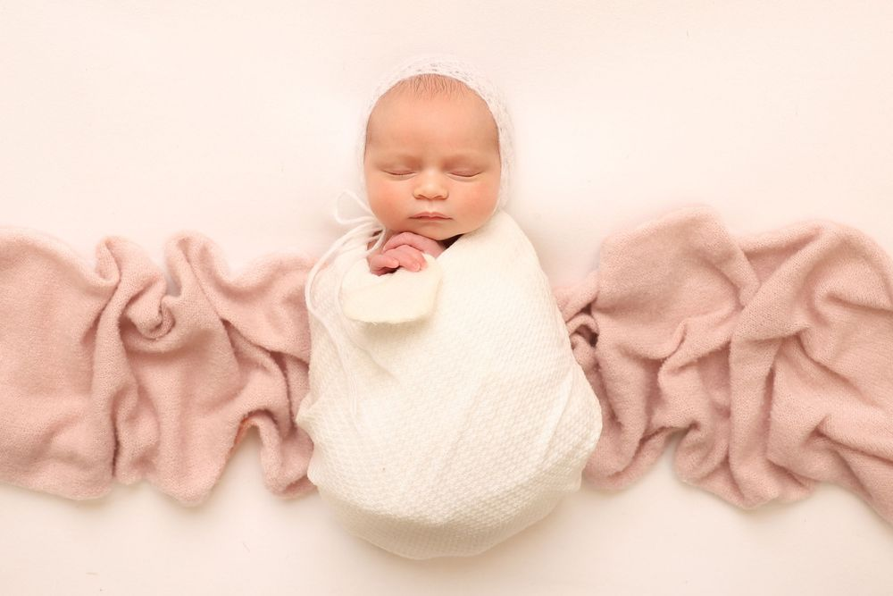
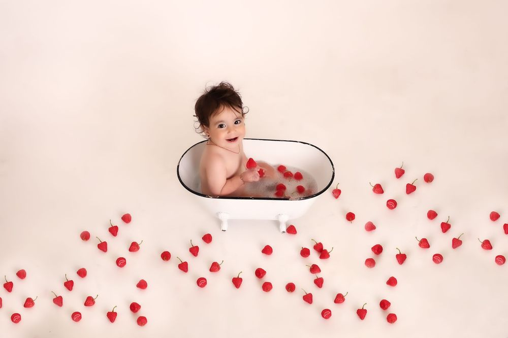
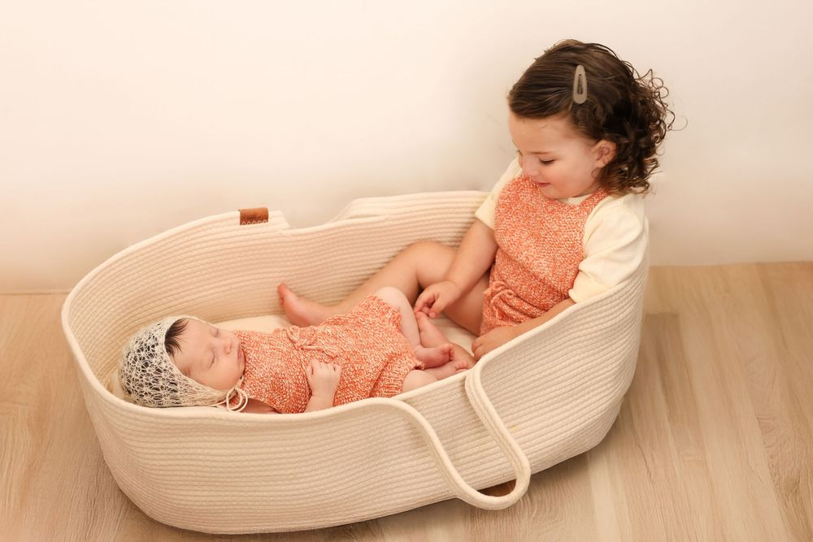
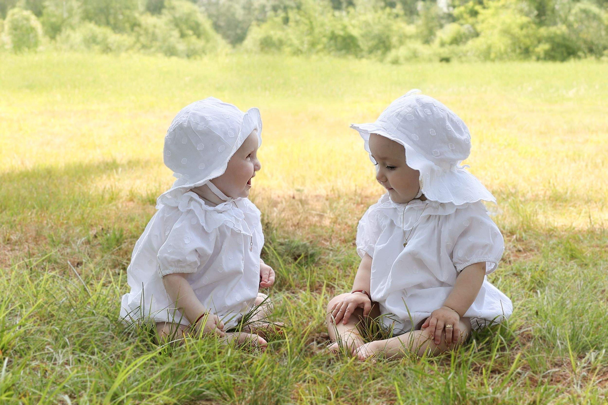
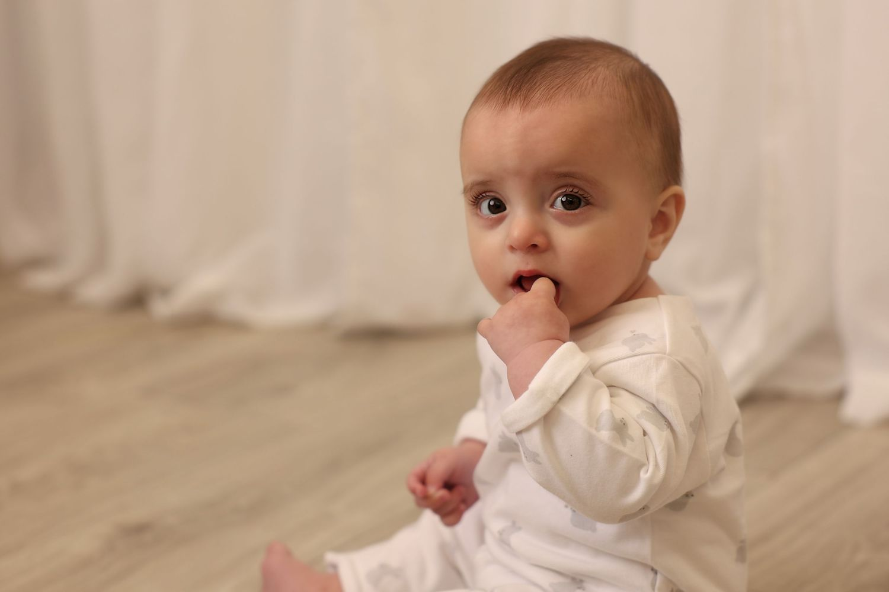
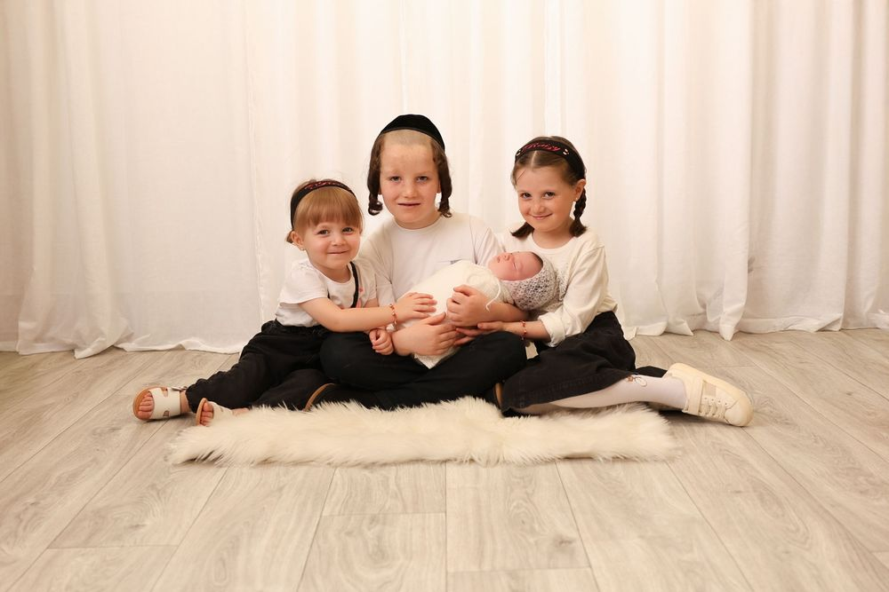
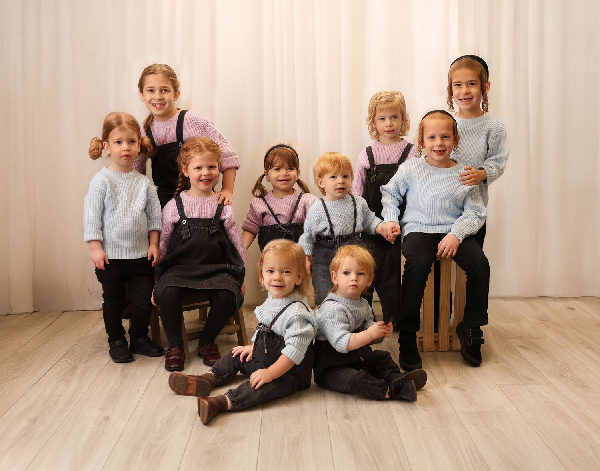

Layout 1
Masonry / Waterfall
Images flow naturally in columns, each finding its place based on its own proportions. No cropping, no forced aspect ratios — every image keeps its original shape. Think Pinterest.












Strengths
Organic, natural feel
No cropping needed
Works with any aspect ratio
Considerations
Read order is top-to-bottom per column
Bottom edge is uneven